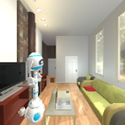
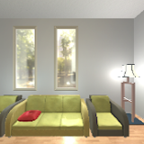

0
Downtime migrating the core ML scheduler to regional federated compute across thousands of pipelines.
SWE/MLE · ML Systems
SWE/MLE on Uber’s ML Training team. I build the systems that run large GPU training workloads and keep them reliable, efficient, and cost-aware.
Founder of Marovi AI, a wiki-style translation platform that makes research and learning materials accessible across languages. Former NSF Graduate Research Fellow at UIUC.
Bay Area based · Fluent in English and Spanish

Signals from production systems, research, and Marovi AI.
0
Downtime migrating the core ML scheduler to regional federated compute across thousands of pipelines.
3.7%
Reduction in unsafe behavior from a multi-signal distracted driving system.
Top 10% x2
Y Combinator selections for Marovi AI.
5x
Faster multi-agent motion planning via spatial regression models.
Systems areas I work in.
Infrastructure for large GPU fleets: reliability, throughput, and orchestration.
Production GenAI: assistants, safety tooling, and evaluation loops.
Translation infrastructure for research and learning materials across languages.
Fine-tuning strategy, partnerships, and production rollout.
Selected work across ML infrastructure, GenAI, and translation.
A few representative projects.
Wiki-style translation platform that makes research and learning materials accessible across languages, with verification and quality feedback loops.


Learns avoidance-critical regions to build roadmaps that scale to dynamic, multi-agent motion planning.


Uses multiple camera perspectives to improve navigation policy learning.


Weak supervision and behavioral heuristics surface risky roadway events when labeled data is scarce.


Weak supervision scales relation extraction beyond single sentences.
Selected academic work.
Focused on ML training infrastructure at Uber, plus safety tooling and fine-tuning partnerships.
I make music and shoot photos/video. Highlights on Instagram.